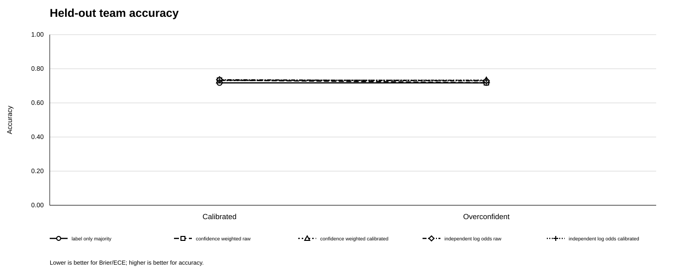
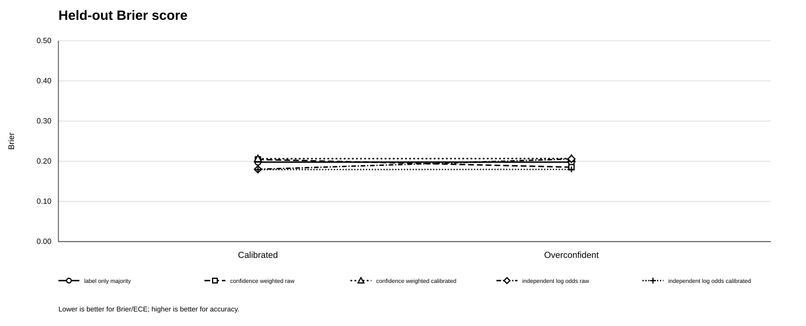
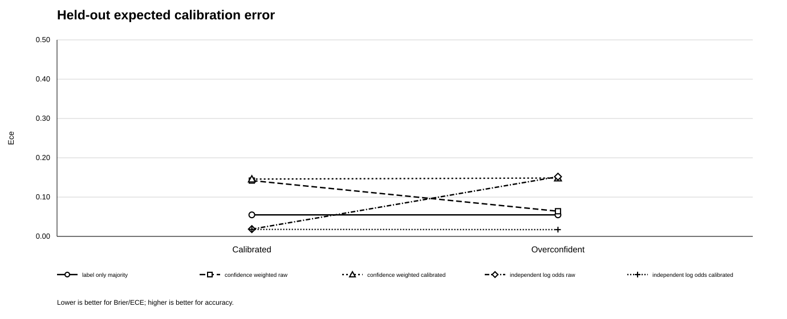
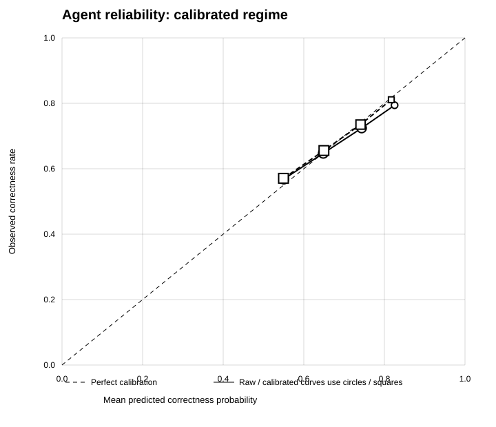
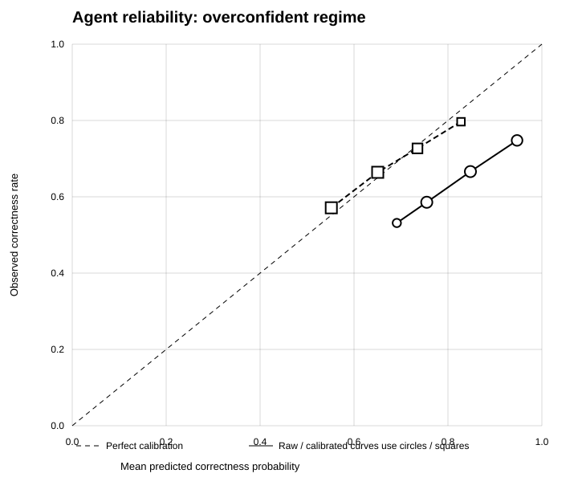

Experiment · Agentic AI · 24 October 2026
Agent Uncertainty Wire: comparing confidence aggregation in a synthetic agent team
Published 24 October 2026 · Reproducible synthetic benchmark · Version 0.3.0
When several agents provide a label and a confidence score, how should a team combine their opinions? This experiment compares five simple aggregation rules in a controlled synthetic binary task. The results show why probability quality depends on the aggregation assumptions—not confidence scores alone.
Key findings
- Across the synthetic test scenarios, independent log-odds aggregation had lower Brier score and expected calibration error (ECE) than the other tested rules in both confidence regimes.
- Under the overconfident regime, raw log-odds ECE rose to 0.152; the calibrated log-odds variant was 0.017. Calibration helped in this simulator, but does not guarantee the same result in real systems.
- These are simulated agents, not real LLMs. No LLM calls were made, and the findings do not establish real-world performance or safety.
Research question
How do confidence aggregation rules compare in a controlled synthetic binary task, and does correcting agent-level confidence necessarily improve team-level predictions?
What was tested?
The benchmark simulates three agents with different nominal skills. Each of five random seeds generates 2,500 scenarios. Scenario IDs are split into a calibration partition (40%) and a held-out test partition (60%). The same base scenarios are evaluated under two confidence regimes: calibrated and overconfident. The overconfident regime adds 0.18 to reported confidence before clipping.
Five policies are compared: label-only majority; raw arithmetic confidence weighting; confidence weighting after a per-agent logistic calibration model; raw independent log-odds aggregation; and independent log-odds aggregation after calibration. Calibration is fitted on calibration rows only. Metrics are reported on held-out scenarios, with mean and standard deviation across five seeds.
The log-odds policies assume a balanced prior and conditionally independent agent errors. That assumption may not hold when agents share data, models or failure modes. The method is therefore a comparison baseline, not a universally valid rule.
Results: calibrated confidence regime



| Confidence regime | Policy | Accuracy | Brier | ECE |
|---|---|---|---|---|
| Calibrated | Label-only majority | 0.717 ± 0.013 | 0.198 ± 0.004 | 0.055 ± 0.009 |
| Calibrated | Confidence-weighted, raw | 0.733 ± 0.013 | 0.205 ± 0.002 | 0.142 ± 0.013 |
| Calibrated | Confidence-weighted, calibrated | 0.731 ± 0.013 | 0.206 ± 0.003 | 0.146 ± 0.012 |
| Calibrated | Independent log-odds, raw | 0.736 ± 0.014 | 0.180 ± 0.006 | 0.019 ± 0.009 |
| Calibrated | Independent log-odds, calibrated | 0.733 ± 0.013 | 0.179 ± 0.005 | 0.018 ± 0.005 |
| Overconfident | Label-only majority | 0.717 ± 0.013 | 0.198 ± 0.004 | 0.055 ± 0.009 |
| Overconfident | Confidence-weighted, raw | 0.718 ± 0.010 | 0.185 ± 0.004 | 0.064 ± 0.009 |
| Overconfident | Confidence-weighted, calibrated | 0.733 ± 0.012 | 0.207 ± 0.003 | 0.149 ± 0.011 |
| Overconfident | Independent log-odds, raw | 0.729 ± 0.012 | 0.206 ± 0.009 | 0.152 ± 0.012 |
| Overconfident | Independent log-odds, calibrated | 0.733 ± 0.014 | 0.180 ± 0.005 | 0.017 ± 0.004 |
Values are mean ± standard deviation across five seeds; the standard deviation is not a confidence interval. Each regime-policy row contains 7,500 held-out predictions pooled across seeds. The paired seed-level intervals in the repository are descriptive and imprecise with only five seeds.
Agent-level calibration is not team-level calibration


In the overconfident regime, the agent-level raw Brier score was 0.2553 and raw ECE was 0.1801; after calibration these were 0.2229 and 0.0228. This is a separate diagnostic from the team-level scores. Notably, calibrated arithmetic confidence weighting did not improve team-level Brier score in the same way. A calibration step should therefore be evaluated within the full downstream decision pipeline.
Limitations
- The task and agents are synthetic; the benchmark does not include natural-language messages, tool use, long-horizon planning or real LLM outputs.
- Only three simulated agents and five random seeds are used. Small differences should not be overinterpreted.
- Independent log-odds aggregation relies on a balanced prior and conditional independence. Correlated errors can invalidate the assumptions.
- ECE depends on binning and can hide subgroup miscalibration. Accuracy, Brier score, reliability plots and operational costs should be considered together.
Reproducibility and code
The benchmark uses Python's standard library. The v0.3.0 run generated 75,000 agent-message rows and 75,000 held-out policy predictions. Eight automated tests passed in the reported local run. The code, data card, run manifest, CSV outputs and graphs are available in the public repository.
View the Agent Uncertainty Wire code and data on GitHub →
Conclusion
Confidence aggregation is an assumption-sensitive design choice. In this controlled simulator, independent log-odds aggregation produced the lowest Brier score and ECE, especially after calibration under imposed overconfidence. The next step is to test the hypotheses with real model outputs, deliberately correlated agent errors, imbalanced priors and decision costs before making claims about deployed agent teams.
Suggested citation: Hussain, M. (2026). Agent Uncertainty Wire: Comparing Confidence Aggregation Rules in a Synthetic Multi-Agent Task, version 0.3.0. Code and data: GitHub repository. No DOI has been minted.